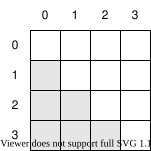

Finding Duplicate Files
- A hash function creates a fixed-size value from an arbitrary sequence of bytes.
- Use big-oh notation to estimate the running time of algorithms.
- The output of a hash function is deterministic but not easy to predict.
- A good hash function's output is evenly distributed.
- A large cryptographic hash can be used to uniquely identify a file's contents.
Suppose we want to find duplicated files, such as extra copies of photos or data sets. People often rename files, so we must compare their contents, but this will be slow if we have a lot of files.
We can estimate how slow "slow" will be with a simple calculation. \( N \) objects can be paired in \( N(N-1) \) ways. If we remove duplicate pairings (i.e., if we count A-B and B-A as one pair) then there are \( N(N-1)/2 = (N^2 - N)/2 \) distinct pairs. As \( N \) gets large, this value is approximately proportional to \( N^2 \). A computer scientist would say that the time complexity of our algorithm is \( O(N^2) \), which is pronounced "big-oh of N squared". In simpler terms, when the number of files doubles, the running time roughly quadruples, which means the time per file increases as the number of files increases.
Slowdown like this is often unavoidable, but in our case there's a better way. If we generate a shorter identifier for each file that depends only on the bytes it contains, we can group together the files that have the same identifier and only compare the files within a group. This approach is faster because we only do the expensive byte-by-byte comparison on files that might be equal. And as we'll see, if we are very clever about how we generate identifiers then we can avoid byte-by-byte comparisons entirely.
Getting Started
We'll start by implementing the inefficient \( N^2 \) approach so that we can compare our later designs to it. The short program below takes a list of filenames from the command line, finds duplicates, and prints the matches:
def find_duplicates(filenames):
matches = []
for left in filenames:
for right in filenames:
if same_bytes(left, right):
matches.append((left, right))
return matches
if __name__ == "__main__":
duplicates = find_duplicates(sys.argv[1:])
for (left, right) in duplicates:
print(left, right)
This program uses a function called same_bytes
that reads two files and compares them byte by byte:
def same_bytes(left_name, right_name):
left_bytes = open(left_name, "rb").read()
right_bytes = open(right_name, "rb").read()
return left_bytes == right_bytes
Notice that the files are opened in binary mode
using "rb" instead of the usual "r".
As we'll see in Chapter 17,
this tells Python to read the bytes exactly as they are
rather than trying to convert them to characters.
To test this program and the others we're about to write,
we create a tests directory with six files:
| Filename | a1.txt |
a2.txt |
a3.txt |
b1.txt |
b2.txt |
c1.txt |
|---|---|---|---|---|---|---|
| Content | aaa |
aaa |
aaa |
bb |
bb |
c |
We expect the three a files and the two b files to be reported as duplicates.
There's no particular reason for these tests—we just have to start somewhere.
Our first test looks like this:
python brute_force_1.py tests/*.txt
tests/a1.txt tests/a1.txt
tests/a1.txt tests/a2.txt
tests/a1.txt tests/a3.txt
tests/a2.txt tests/a1.txt
tests/a2.txt tests/a2.txt
tests/a2.txt tests/a3.txt
tests/a3.txt tests/a1.txt
tests/a3.txt tests/a2.txt
tests/a3.txt tests/a3.txt
tests/b1.txt tests/b1.txt
tests/b1.txt tests/b2.txt
tests/b2.txt tests/b1.txt
tests/b2.txt tests/b2.txt
tests/c1.txt tests/c1.txt
Our program's output is correct but not useful:
every file is reported as being identical to itself,
and every match of different files is reported twice.
Let's fix the nested loop in find_duplicates
so that we only check potentially differing pairs once
(Figure 1):
def find_duplicates(filenames):
matches = []
for i_left in range(len(filenames)):
left = filenames[i_left]
for i_right in range(i_left):
right = filenames[i_right]
if same_bytes(left, right):
matches.append((left, right))
return matches

Hashing Files
Instead of comparing every file against every other, let's process each file once to produce a short identifier that depends only on the file's contents and then only compare files that have the same identifier, i.e., that might be equal. If files are evenly divided into \( g \) groups then each group will contain roughly \( N/g \) files, so the total work will be roughly \( O(g(N/g)^2) \) (i.e., \( g \) groups times \( (N/g)^2 \) comparisons within each group). Simplifying, this is \( N^2/g \), so as the number of groups grows, the overall running time should decrease (Figure 2).
We can construct IDs for files using a hash function to produce a hash code. Since bytes are just numbers, we can create a very simple hash function by adding up the bytes in a file and taking the remainder modulo some number:
def naive_hash(data):
return sum(data) % 13
Here's a quick test that calculates the hash code for
successively longer substrings of the word "hashing":
example = bytes("hashing", "utf-8")
for i in range(1, len(example) + 1):
substring = example[:i]
hash = naive_hash(substring)
print(f"{hash:2} {substring}")
0 b'h'
6 b'ha'
4 b'has'
4 b'hash'
5 b'hashi'
11 b'hashin'
10 b'hashing'
The output seems random, but is it? As a more stringent test, let's try hashing every line of text in the Project Gutenberg version of the novel Dracula and plot the distribution (Figure 3).

Most of the buckets are approximately the same height, but why is there a peak at zero? Our big-oh estimate of how efficient our algorithm would be depended on files being distributed evenly between groups; if that's not the case, our code won't be as fast as we hoped.
After a bit of digging, it turns out that the text file we're processing uses a blank line to separate paragraphs. These hash to zero, so the peak reflects an unequal distribution in our data. If we plot the distribution of hash codes of unique lines, the result is more even (Figure 4).

Hashing is a tremendously powerful tool:
for example,
Python's dictionaries hash their keys to make lookup fast.
Now that we can hash files,
we can build a dictionary with hash codes as keys
and sets of filenames as values.
The code that does this is shown below;
each time it calculates a hash code,
it checks to see if that value has been seen before.
If not,
it creates a new entry in the groups dictionary
with the hash code as its key
and an empty set as a value.
It can then be sure that there's a set to add the filename to:
def find_groups(filenames):
groups = {}
for fn in filenames:
data = open(fn, "rb").read()
hash_code = naive_hash(data)
if hash_code not in groups:
groups[hash_code] = set()
groups[hash_code].add(fn)
return groups
We can now re-use most of the code we wrote earlier to find duplicates within each group:
groups = find_groups(sys.argv[1:])
for filenames in groups.values():
duplicates = find_duplicates(list(filenames))
for (left, right) in duplicates:
print(left, right)
tests/a2.txt tests/a1.txt
tests/a3.txt tests/a1.txt
tests/a3.txt tests/a2.txt
tests/b1.txt tests/b2.txt
Better Hashing
Let's go back to the formula \( O(N^2/g) \) that tells us how much work we have to do if we have divided \( N \) files between \( g \) groups. If we have exactly as many groups as files—i.e., if \( g \) is equal to \( N \)—then the work to process \( N \) files would be \( O(N^2/N) = O(N) \), which means that the work will be proportional to the number of files. We have to read each file at least once anyway, so we can't possibly do better than this, but how can we ensure that each unique file winds up in its own group?
The answer is to use a cryptographic hash function. The output of such a function is completely deterministic: given the same bytes in the same order, it will always produce the same output. However, the output is distributed like a uniform random variable: each possible output is equally likely, which ensures that files will be evenly distributed between groups.
Cryptographic hash functions are hard to write,
and it's very hard to prove that a particular algorithm has the properties we require.
We will therefore use a function from Python's hashing module
that implements the SHA-256 hashing algorithm.
Given some bytes as input,
this function produces a 256-bit hash,
which is normally written as a 64-character hexadecimal string.
This uses the letters A-F (or a-f) to represent the digits from 10 to 15,
so that (for example) 3D5 is \((3×16^2)+(13×16^1)+(5×16^0)\), or 981 in decimal:
example = bytes("hash", "utf-8")
for i in range(1, len(example) + 1):
substring = example[:i]
hash = sha256(substring).hexdigest()
print(f"{substring}\n{hash}")
b'h'
aaa9402664f1a41f40ebbc52c9993eb66aeb366602958fdfaa283b71e64db123
b'ha'
8693873cd8f8a2d9c7c596477180f851e525f4eaf55a4f637b445cb442a5e340
b'has'
9150c74c5f92d51a92857f4b9678105ba5a676d308339a353b20bd38cd669ce7
b'hash'
d04b98f48e8f8bcc15c6ae5ac050801cd6dcfd428fb5f9e65c4e16e7807340fa
The Birthday Problem
The odds that two people share a birthday are 1/365 (ignoring February 29). The odds that they don't are therefore \( 364/365 \). When we add a third person, the odds that they don't share a birthday with either of the preceding two people are \( 363/365 \), so the overall odds that nobody shares a birthday are \( (364/365)×(363/365) \). If we keep going, there's a 50% chance of two people sharing a birthday in a group of just 23 people, and a 99.9% chance with 70 people.
The same math can tell us how many files we need to hash before there's a 50% chance of a collision with a 256-bit hash. According to Wikipedia, the answer is approximately \( 4{\times}10^{38} \) files. We're willing to take that risk.
Using this library function makes our duplicate file finder much shorter:
import sys
from hashlib import sha256
def find_groups(filenames):
groups = {}
for fn in filenames:
data = open(fn, "rb").read()
hash_code = sha256(data).hexdigest()
if hash_code not in groups:
groups[hash_code] = set()
groups[hash_code].add(fn)
return groups
if __name__ == "__main__":
groups = find_groups(sys.argv[1:])
for filenames in groups.values():
print(", ".join(sorted(filenames)))
python dup.py tests/*.txt
More importantly, our new approach scales to very large sets of files: as explained above, we only have to look at each file once, so the running time is as good as it possibly can be.
Summary
Figure 5 summarizes the key ideas in this chapter, the most important of which is that some algorithms are intrinsically better than others.
Exercises
Odds of Collision
If hashes were only 2 bits long, then the chances of collision with each successive file assuming no previous collision are:
| Number of Files | Odds of Collision |
|---|---|
| 1 | 0% |
| 2 | 25% |
| 3 | 50% |
| 4 | 75% |
| 5 | 100% |
A colleague of yours says this means that if we hash four files, there's only a 75% chance of any collision occurring. What are the actual odds?
Streaming I/O
A streaming API delivers data one piece at a time
rather than all at once.
Read the documentation for the update method of hashing objects
in Python's hashing module
and rewrite the duplicate finder from this chapter
to use it.
Big Oh
Chapter 1 said that as the number of components in a system grows, the complexity of the system increases rapidly. How fast is "rapidly" in big-oh terms?
The hash Function
-
Read the documentation for Python's built-in
hashfunction. -
Why do
hash(123)andhash("123")work whenhash([123])raises an exception?
How Good Is SHA-256?
-
Write a function that calculates the SHA-256 hash code of each unique line of a text file.
-
Convert the hex digests of those hash codes to integers.
-
Plot a histogram of those integer values with 20 bins.
-
How evenly distributed are the hash codes? How does the distribution change as you process larger files?